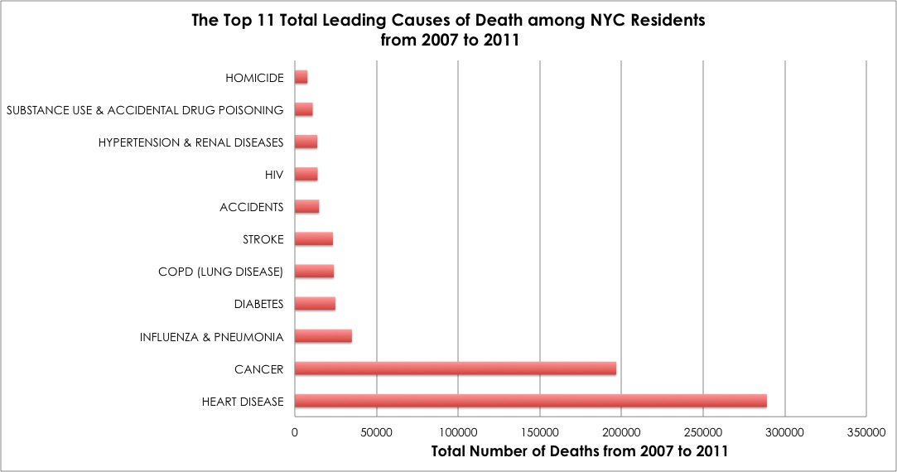
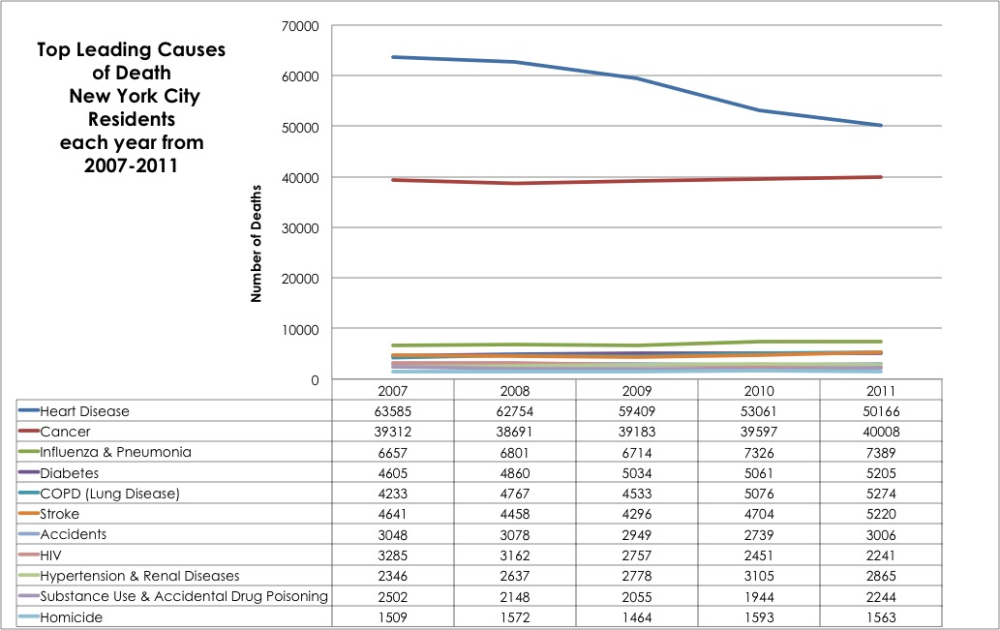

What are New Yorkers most likely to die of?
Hint: It's not what you think it is!

This is probably not so awesome news for the average NYC resident. The data covers the period of 2007 to 2011.
  Source: data.cityofnewyork.us
This is probably not so awesome news for the average NYC resident. The data covers the period of 2007 to 2011.